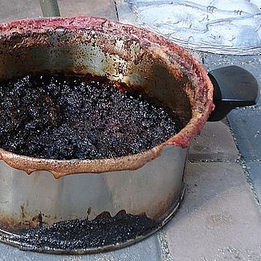
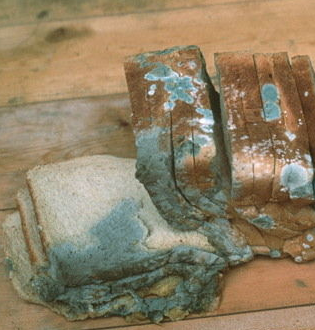

Recipes for Human
Heated Pot
Ingredients
- 3 cups cooking greases
- 2 cups enriching powder
- 50 thimbles spiced sand
- 5 ounces ground cement
- 1 gallon raccoon milk
- 15 crow eggs
- Servings:
- about 2-1/2
- Prep Time:
- 5 minutes
- Cook Time:
- 80 minutes

A Man
Ingredients
- 1/4 pound deboned spine
- 1 teaspoon salt of the Earth
- 1 pinch paprika (for punch)
- 2 cups protectoroni
- Servings:
- 1
- Prep Time:
- 30 years
- Cook Time:
- 90 minutes
Fungal Loaf
Ingredients
- 1 loaf white bread
- 4 cups of damp tears
- 2-1/2 deoderant stick
- 1/3 mouthful body oil
- 15 bottles stale breath
- Servings:
- about 10
- Prep Time:
- 5 days
- Cook Time:
- 15 seconds
